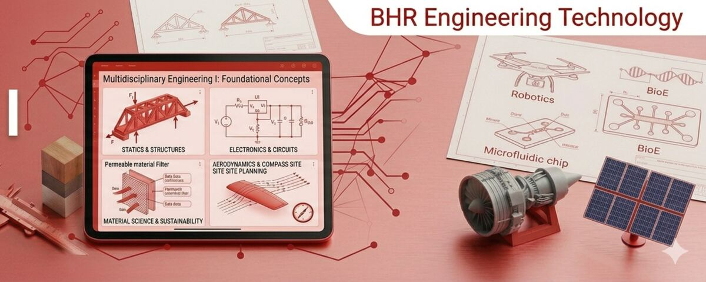

It is at least seven. Someone designs the part, someone works out whether it will hold, someone writes the code that moves it, someone gets it manufactured, someone manages the schedule so it ships. All of those are engineering, and they suit very different people.

Grade 9 · Engineering I
Engineering I
Delivered by Mr. Dryer
Grade 9 in this shop is Terms 3 and 4. Terms 1 and 2 are exploratory — two mini exploratory days that between them show you all eighteen shops, then a full week in each of the nine you choose. You join us for the back half of the year once you have picked. It is half a year, so it moves quickly — but from the day you walk in, this is your shop.
The units for the year
Quoted from the shop’s Grade 9 unit breakdown. The order is the plan, not a promise.
1
Exploratory & Shop Readiness
What the shop is, how to be safe in it, and what engineering technology actually means as a trade.
2
Intro to Digital Design & CAD
Your first time making something on a screen that could be made for real.
3
Engineering Design & Planning
The design process: define the problem before you solve it.
4
Graphics & Documentation Basics
Drawing so that someone else can build from it.
5
Intro to Fabrication & Prototyping
Turning the file into a thing you can hold.
6
Grade 9 EOY Project
Everything above, in one build, at the end of the year.
Assignments for this year live in Google Classroom. Mr. Dryer delivers Grade 9, and this page deliberately stops at the unit map rather than guessing at his assignments.
If you want the briefs here too, they can be added the same way Grades 11 and 12 were.
Exploratory week
Exploratory runs across Terms 1 and 2. Two mini exploratory days show you all eighteen shops between them, and from those you pick nine to spend a full week in. If this is your week with us, this section is for you — the rest of the page is what the year looks like once you choose us.
Most students who leave this shop go on to college, and they go with four years of CAD, documentation and project work already behind them. Others decide on a more direct route into the field. The shop is built so that both stay open to you — what you do with it is your call.
Not models of things. A part that comes off the printer and fits. A circuit that does what you said it would. A drawing someone else can build from without asking you a question.
Every project here ends with testing, and testing is where you find out your prediction was off. The engineers who get good are the ones who write down the difference instead of hiding it.
Three things worth doing while you are here.
- Ask an upperclassman what they are building for their capstone, and why they chose it.
- Ask what the worst thing they ever printed was, and what they changed.
- Look at the seven pathways and see which one you keep coming back to.